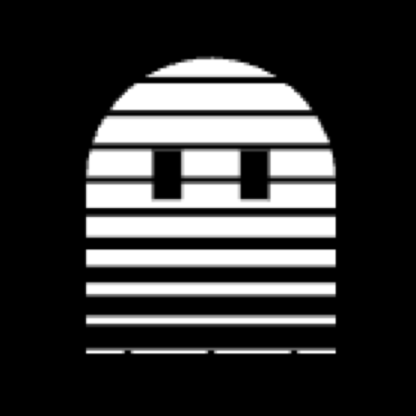

Claude Code plugin · free and open source
Clear old context when you switch tasks.
Claude re-reads your whole chat on every message. ghosted_ clears finished work when you switch tasks, and starts your next one for you.
- −70%
- cost in sessions where you switch tasks
- 3.3×
- more work per Pro/Max limit, same sessions
- 0 / 75
- wrong switches. The old chat is always saved first

Install
- 1Check Node.js
Run
node -v. If it says “command not found”, install it from nodejs.org first. - 2Install
Paste both lines in your terminal:
$ claude plugin marketplace add giovanbelle/ghosted$ claude plugin install ghosted@ghosted - 3Restart Claude Code and work as usual
Press Enter on the setup question. The first time you switch tasks you'll see a line from ghosted_, then your task starts by itself.
/ghosted-statsshows what it saved.
In your terminal
What a task switch looks like
You type as usual. When a prompt starts a new task, you see this.
ghosted_ stats
task switches 12 (4 kept a summary)
estimated saved about $3.65 (1,458k tokens of old chat
no longer re-read on every message)
cache warm pings 6 (1,146k tokens kept warm)
judge calls 31 ($0.0403 total)
settings terse auto (lite), warm 60m, judge above 20k
Your dashboard
Dashboard
/ghosted-stats opens this page on your own computer.
Measured
Results
Total cost over 36 Opus runs in 6 scenarios: $15.88 without, $4.78 with.
Wrong task switches in the latest judge test. When unsure, it keeps the context.
Tokens read from cache by one warm ping, against 372 written.
Built in
Features
Task switch
Clear on task switch
A Haiku judge spots a new task for $0.0013. The old chat is archived, /clear is typed for you, and your prompt starts.
Cache warming
Keep the cache warm
While you're away, a hidden copy of the session keeps the prompt cache alive for a tenth of the input price, so coming back doesn't rewrite it at up to 2×.
Terse and recall
Short answers, searchable archive
Compressed answers in the terminal, 19% cheaper. /ghosted-recall brings back any cleared conversation.
Install
Two commands, then restart Claude Code. Free, open source, no dependencies.